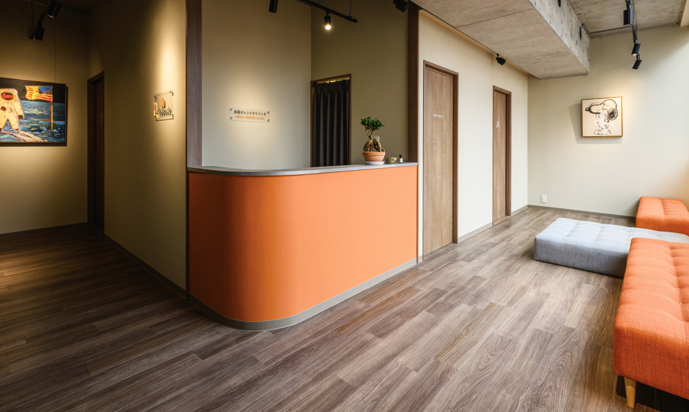
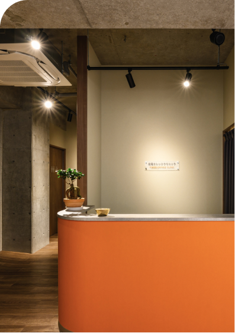

妊娠期から子ども、そして大人になるまで、
生まれる前から一生の健康をサポートします。
ABOUT
広尾オレンジクリニックは
お子さまが 30 年、
40 年後の未来で今と同じように
健康な心と体で元気に過ごせる。
そんな状態を目指すための
予防医学をメインに扱っている
クリニックです。
広尾 駅
徒歩 2 分
土日祝
対応可能
完全
予約制
※ 保険診療、診療は行っておりません。
体調のすぐれない方、薬処方をご希望の方は
保険診療を行っている医療を受診ください。
採血 65 項目で、現在の栄養状態、不足している栄養素と将来の生活習慣病のなりやすさなどをチェックします。
現在の食事状況、血液検査の結果を分析し、お一人お一人に合わせた健康的な食事や改善点を栄養士から対面でアドバイスを受けられます。
お子様のご年齢：9歳
最初は子供に血液検査をするのがかわいそうと思っていましたが、今の栄養状態を見て不足している栄養がわかると、将来の健康のために、今のうちからしっかり正しい情報で、食事内容に気を付けなきゃと思いました。
将来の自分の体を大事にするという健康意識の基礎を身につけさせてあげることは大事と感じました。3年生男児ですが、全く泣かずにむしろ、注射を頑張れたと自信になった様子でした。
血液検査の結果から明日から使える不足栄養素を補うレシピを教えて貰い助かりました。
お子様のご年齢：10歳
検査のおかげで、わが子の思考のクセや得意な学び方が具体的に分かりました。今まで手探りだった勉強の付き合い方が、無理のない方法で進められるようになり親子でのストレスも減りました。特性を知ることが、こんなに心強いとは思いませんでした。
お子様のご年齢：1歳
ママ友の子供が初めてキウイを食べた時に肌が赤くなり、咳が酷いと訴え出して焦ったとき、アナフィラキシーショックの話題もSNSで見ていたので、気になり受けました。エビアレルギーの可能性があるとわかったので、子供がエビを食べるときには見守りながら食べてもらうことにしています。
女性 38歳
最近周りのママもやっていたので気になっていて、2人目の出産時に夫と相談して検査を受けることにしました。アクセスが良いのと、待ち時間なく、綺麗でおしゃれな院内で、明るい気持ちで検査を受けることができました。クーポンコードも使えてお得にできました。
まずは無料カウンセリング
インスタグラム DMやお電話からでも

検査内容によりますが30分〜お時間いただきます
結果はスマホから確認できる
管理が楽で便利
食育・栄養アドバイスを行います
※検査内容によります
Satohiro Kawade
脳外科医として超急性期脳卒中診療に従事。生活習慣病の末期の患者を診療する中で、子どもの頃からの生活習慣病予防が重要であるとの想いから、LifeDock サービスを立ち上げました。受験が終わってからの長い人生を健康に過ごすために、運動量が少なくなり、栄養が偏りがちな受験生をサポートします。
何歳から検査を受けられますか？
血液検査は3歳以上から大人まで可能です。
知能検査は5歳〜16歳です。
保険診療はしていますか？
完全自由診療のクリニックです。
どうやって予約すればいいですか？
まずは無料カウンセリングをご予約ください。ご来院時に最適なプランのご提案とご予約を取らせて頂きます。
検査結果はいつわかりますか？
血液検査の結果は3週間ほど、知能検査の結果は1週間ほど。
アレルギーやNIPTなどその他血液検査は、1〜2週間程度でお客様にメールが届き、ログインすることでWeb上で結果を確認することができます。
こどもが血液検査を嫌がらないか心配です
当院ではこども採血の経験豊富な看護師が対応しております。
小学校低学年までは最初は緊張していますが、受けた後は「頑張れたよ！！」と保護者の方に報告している子もおり、「思ったより痛くなかった。」とお声をいただくことが多いです。
※どうしても採血が難しいケースもあります。ご了承ください。
処方はしていますか？
お薬の処方はしておりません。医療機関でしか購入できない安全性の高いサプリメントの販売はしています。
こどもでも生活習慣病になるの？
生活習慣病は痛い、痒いなどの症状として現れないため気づきませんが、早い人では55歳ごろに血管の病気として表に現れます。こどもの頃から将来の生活習慣病の根っこはあります。早めに対処をしてあげることが大切です。